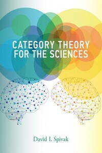
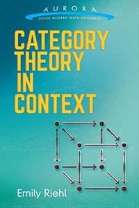

Books

Category Theory for Programmers
This book by Bartosz Milewski (2019) introduces Category Theory at a level appropriate for computer scientists and provides practical examples (in Haskell) in the context of programming languages.

An Invitation to Applied Category Theory: Seven Sketches in Compositionality
This book by David I. Spivak and Brendan Fong (2019) provides an introductory glimpse into Category Theory by covering 7 key topics. It highlights practical, real-world examples to give readers a feel for the abstract theoretical concepts.

The Joy of Abstraction
The book by Eugenia Cheng (2022) is written in a clear and engaging style. Cheng is a gifted writer who is able to make complex mathematical concepts accessible to a general audience. The book uses a variety of examples. These examples come from a variety of fields, including computer science, physics, biology, and social justice.

Category Theory for the Sciences
An introduction to category theory as a rigorous, flexible, and coherent modeling language that can be used across the sciences.
Categories for the Working Mathematician
A detailed guide on the book authored by Saunders Mac Lane (1971) the co-founder of the field. The content is in-depth, and its mathematical aspects can be challenging for the reader. It's advisable to explore this book after reading one or two of the more introductionary books.

Category Theory in Context
This text book by Emily Riehl (2016) is advanced and is suitable for diligent students who have mastered prior readings. It's praised for its well-crafted prose on Category Theory. Initially, it adopts an example-based methodology before illustrating how category theoretical language can encapsulate the concepts.
Basic Category Theory
Tom Leinster's (2014) book represents an edited version of his lecture notes. As such, it is a concise work that provides focused coverage of the Category Theory topics it addresses.
Algebra: Chapter 0
Aluffi's book (2009) revisits fundamentals while introducing Category Theory early on. Notably, the book aims to be self-contained, with few external references. Aluffi's unique approach maintains rigor, making it a popular choice for Category Theory learners. It provides valuable insights into homological algebra, linking algebra and topology.
Online Communities
Those looking to connect with others interested in Category Theory have several active online communities, with the most vibrant engagement being on: